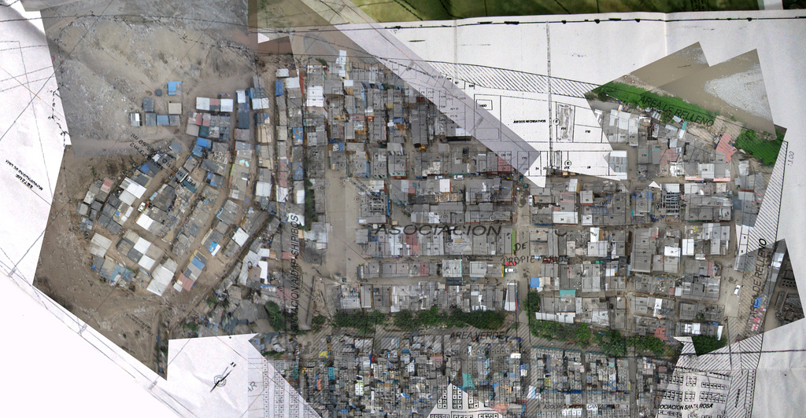

Following the completion of the initial map of Canta Gallo, Sara Gomez of CEDRO suggested that we attempt to map the adjacent settlement, which I was surprised to find was also part of Canta Gallo. Collaborating again with Daniel Miracle and Escuelab, we met with Sr. Ricardo, the leader of the lower part of Canta Gallo and spent a day mapping that area as well. I worked with Layner Mori using Photoshop to stitch the resulting imagery over a map supplied by Sr. Ricardo, and we printed a paper copy. In a discussion with Sara, Layner, and Daniel, we decided to combine the two maps -- which showed some overlap - and distribute the combined map.
|

|
Producing a combined map was a potentially controversial decision, as the two settlements were experiencing some tension due to both ethnic and territorial issues. The lower settlement, spread over a much flatter and larger area, was presumably further advanced in its bid for land title, as they had a surveyed map with well-defined plots, whereas the upper settlement with whom we had first worked had only a map of its outer boundaries. However, in an attempt to avoid involving ourselves in local political issues, we deemed it more fair to provide maps and mapping tools to both communities equally. In retrospect, I feel that to attempt to position ourselves as neutral parties may have been misguided, as producing maps and teaching map-making workshops are by no means a neutral acts. However, I do believe that providing open access to these tools and techniques, as well as to the geographic information they can produce, is a positive goal. One aspect of maps which I value highly is their ability to reconcile differing mental models of a geography, and to make explicit the differences between those models. My hope is that we helped to do so in an inclusive manner.